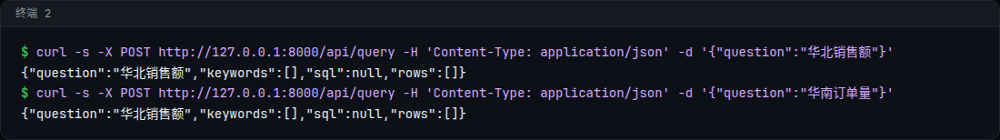

练本 · 阅读版（md 正典派生，改内容请改 manual/page-04.md）
第 4 页 · 加一个能收问题的接口
前置：第 0 页备好环境；本页接第 3 页留下的 lab/app.py 与 8000 端口的服务。
这一页构建什么
在同一个服务里加 POST /api/query：你发过去一个 JSON {"question": "..."}，它回给你一个 JSON。
这一页先让接口能收到问题：不查库、不生成 SQL（口语常说“拼 SQL”），只把“收发 JSON”这条路修通。
猜一猜
动手前写下答案：把 -d 里的问题写成 {"question": "华南订单量"} 发过去，
返回 JSON 里的 "question" 会是 "华南订单量"，还是 "华北销售额"？"sql"、"rows" 里又是什么？
动手
要改的文件是 lab/app.py：改完先按 Ctrl+S 保存，再回终端 1 重启；不保存就重启，服务还在跑旧代码（实测会回 {"detail":"Not Found"} 或上一页的旧 JSON，跟下面的期望输出完全不同）。
- 把
lab/app.py整个替换成下面这段（第 3 页的代码全部删掉，不要留）：
# lab/app.py —— 加一个能“收问题”的接口
from fastapi import FastAPI
from pydantic import BaseModel
app = FastAPI()
class Query(BaseModel):
question: str
@app.get("/health")
def health():
return {"ok": True}
@app.post("/api/query")
def query(q: Query):
return {
"question": "华北销售额",
"keywords": [],
"sql": None,
"rows": [],
}
- 回终端 1 按 Ctrl+C 停掉旧服务，再用第 3 页那条命令原样重启：
backend/.venv/bin/python -m uvicorn lab.app:app --port 8000
- 在终端 2 连着发两个请求，第二个故意换个问题（地址里的端口沿用你第 3 页实际启动的那个，默认
8000）：
curl -s -X POST http://127.0.0.1:8000/api/query -H 'Content-Type: application/json' -d '{"question":"华北销售额"}'
curl -s -X POST http://127.0.0.1:8000/api/query -H 'Content-Type: application/json' -d '{"question":"华南订单量"}'
你应该看到
{"question":"华北销售额","keywords":[],"sql":null,"rows":[]}
{"question":"华北销售额","keywords":[],"sql":null,"rows":[]}
两次输出一字不差。

对账
- 你猜
question会跟着输入变吗？不会。代码里把它写死成了"华北销售额"，你发什么进去都不影响返回值。 keywords、sql、rows也是空壳：[]是空列表，null是 Python 的None写进 JSON 的样子（不是字符串"null"）。- 这一页能验收的只有一件事：接口通了、JSON 能收能发。你发的问题确实进了
q.question，只是这一页没有用它。 - 记住这四个字段：
question是问题、keywords是关键词、sql要执行的 SQL、rows查出来的行。第 5 页填keywords，第 6 页生成 SQL、第 7 页执行。
你现在拥有：一个能收问题、能回 JSON 的
POST /api/query接口；它是整条问答链路的第一段，第 5 页往里填关键词、第 6 页生成 SQL、第 7 页执行出结果。
自己改一下
把返回里的 "sql": None 改成 "sql": "SELECT 1"，重启服务，再发第一条 curl，看 "sql" 从 null 变成了什么。（参考：{"question":"华北销售额","keywords":[],"sql":"SELECT 1","rows":[]}，question 仍是写死的 "华北销售额"。）